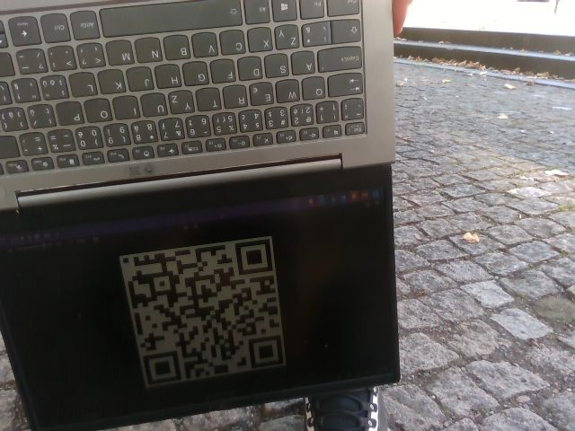

<meta charset="utf-8">
<meta name="viewport" content="width=device-width, initial-scale=1">
<title>ARBot – Robotour 2026</title>
<link rel="icon" href="../assets/img/arbot-logo.png">
<link rel="preconnect" href="https://fonts.googleapis.com">
<link rel="preconnect" href="https://fonts.gstatic.com" crossorigin>
<link rel="stylesheet" href="https://fonts.googleapis.com/css2?family=Archivo:wght@500;600;700&amp;family=JetBrains+Mono:wght@400;600&amp;family=Newsreader:opsz,wght@6..72,400;6..72,500;6..72,600&amp;display=swap">
<link rel="stylesheet" href="../assets/site.css">

<header class="sitehead">
  <a class="brand" href="../index.html"><span>ARBot</span></a>
  <nav>
      <a href="../index.html">Úvod</a>
      <a href="../pages/prezentace.html">Jak to funguje</a>
      <a href="../pages/historie.html">Historie</a>
      <a href="../pages/umisteni-v-soutezich.html" class="on">Umístění v soutěžích</a>
      <a href="../pages/verze.html">Verze</a>
      <a href="../pages/technicke-clanky.html">Technické články</a>
      <a href="../pages/kontakt.html">Kontakt</a>
  </nav>
</header>
<main>
  <div class="pagehead">
    <p class="eyebrow">Robotour &middot; 2026 &middot; Praha, Stromovka &middot; 6. místo</p>
    <h1>Robotour 2026: první celé doručení a chyba, která zavírala správné cesty</h1>
    <p class="lead">Předkolo a první kolo robot prostál v servisní zóně, ve druhém mu po padesáti metrech došla baterie,
      ve třetím poprvé naložil i vyložil &mdash; a ve třetím i čtvrtém ho o dojezd připravil jediný obrácený úsek cesty
      v navigaci. Co přesně se stalo, je vidět v záznamech.</p>
  </div>

<section class="first">
  <p>Letošní <a href="https://robotika.cz/competitions/robotour/2026/cs">Robotour</a> se jel v sobotu 19. září 2026
  v pražské Stromovce ve spolupráci s Planetáriem Praha, přihlášeno bylo dvanáct týmů. Do Stromovky se ARBot vrátil po
  čtrnácti letech &mdash; v roce <a href="robotour-2012.html">2012</a> tu skončil pátý. Zadání je pořád stejná simulace
  doručování: robot vyjede z depa, u nakládky mu obsluha ukáže QR kód s cílem, robot náklad doveze a vrátí se. Letos se
  navíc pravidla změnila v tom, že po vykládce smí následovat rovnou další nakládka. Robot jede bez operátora; jediné
  lidské vstupy jsou QR kód a tlačítko nouzového zastavení.</p>

  <p>Pro robota to byla první soutěž se <a href="https://github.com/AlesRuda/ARBot3">softwarem přepsaným od základu</a>,
  který vznikal od června. Všechny mise se do té doby jezdily v simulaci a na testovacích výjezdech, a jak se ukázalo,
  věci, které simulace nikdy nezkusila, přišly hned v prvních dvou kolech. Každý běh robota se nahrává, takže se
  záznamy daly rozebrat hned na místě: první opravy vznikly z logů už během soutěže, po předkole a po prvním kole.
  Co zbylo, se rozebralo do čísel druhý den.</p>

  <h2>Předkolo (9:00&ndash;10:00): robot nepřečetl QR kód</h2>

  <p>Testovací předkolo vypadalo ze začátku dobře. Než mise začne přijímat kód, potřebuje si nejdřív spolehlivě zaměřit
  polohu depa z GPS, a to se povedlo za pět sekund (šestnáct družic, HDOP 1,36 &mdash; HDOP je číslo, které říká, jak
  dobře jsou družice na obloze rozmístěné, čím menší, tím lepší). Robot pak čekal pod drženým stopem na kód. Ukazoval jsem mu ho z mobilu, z displeje notebooku, nakonec i vytištěný
  na papíře, kroutil s ním, přibližoval, oddaloval &mdash; a stránka náhledu v telefonu po celou dobu tvrdila „kód nevidím". Po čtyřech minutách bylo jasné,
  že se nerozjede.</p>

  <figure>
    
    <figcaption>Snímek z pravé kamery v 9:31:25 &mdash; kód na displeji notebooku je v záběru a offline dekodér ho z tohoto
      snímku přečte. Za běhu na robotu z něj nevznikla ani jedna zpráva.</figcaption>
  </figure>

  <p>Rozbor záznamu na notebooku dal odpověď za pár minut. Skener v záznamu neposlal ani jednu zprávu s přečteným
  kódem, ale offline dekodér nad týmiž snímky ho čte v <b>725 z 3 957</b> snímků obou kamer. Kód tedy v obraze byl,
  jen se k dekodéru nedostal. Příčina je až trapně prostá: skener čte z kamery jménem <span class="mono">Right</span>,
  jenže skutečná kamera D435 se v aplikaci jmenuje <span class="mono">Right&nbsp;740112071021</span> &mdash; driver
  skládá název a sériové číslo. Virtuální kamera v simulaci vrací holý název, takže simulace i všech devatenáct testů
  skeneru procházely a na skutečném robotu skener nikdy nedostal snímek.</p>

  <p>A byla v tom ještě druhá past. Stránka náhledu kreslila první kameru, která poslala snímek, tedy <em>levou</em>.
  Podle telefonu jsem tak ukazoval kód levé kameře (ta ho trefila už v 9:30:04), zatímco se mělo číst z pravé (ta ho
  viděla až v 9:31:25). V terénu je stránka náhledu jediné místo, které ukazuje, co robot vidí &mdash; a když
  kreslí levou kameru, člověk kód přirozeně nastaví levé kameře.</p>

  <div class="note"><b>Oprava.</b> Jméno kamery se porovnává jako první slovo, stránka kreslí tu kameru, ze které se čte
  QR, a v tabulce to říká. Poučení, které si odnáším: jméno senzoru, se kterým se v testu porovnává, musí být to
  z driveru, ne to ze simulace.</div>

  <h2>První kolo (10:00&ndash;11:00): GPS brána a ostrov v mapě</h2>

  <p>Oprava skeneru byla nasazená před startem kola a čtení kódu na robotu hned potvrdil první běh: v 10:04 mise
  zaměřila depo za šest sekund, kód přečetla a přijala. Jenže pak jsem robota přesunul na start do servisní zóny a od té
  chvíle se v dalších třech bězích střídaly dvě jiné poruchy.</p>

  <p><b>Mise se nedokázala zaměřit v depu.</b> V 10:15 robot stál v servisní zóně 158 sekund a mise pořád čekala na
  spolehlivou polohu z GPS. Stránka ukazovala nejistotu polohy 60&ndash;70 m, což vypadá hrozivě, ale je to jen číslo,
  kterým se poloha z GPS váží při skládání odhadu polohy robota, a podmínkou pro zaměření depa to není. Ta zní: alespoň
  šest družic a <b>HDOP nejvýš 2,0 nepřerušeně 5 sekund</b>. Pod stromy u Planetária byl HDOP 1,74&ndash;2,95
  (medián 2,30) při 12&ndash;16 družicích, takže podmínce vyhovovalo <b>4,7 %</b> měření a nejdelší nepřerušená série
  byla 3 sekundy z pěti potřebných. S prahem 3,0 by vyhovovala všechna měření celého záznamu. Práh je od té doby
  nastavitelný a provozní nastavení má 3,0 &mdash; rozptyl polohy hlídá jiná podmínka, HDOP tu má chránit jen před
  vyloženě špatným rozmístěním družic. Ve třetím kole se to hned vyplatilo: robot si zaměřil depo s HDOP 2,71 a šesti
  družicemi, s původním prahem by nevyjel.</p>

  <p><b>Kód se četl, mise ho zamítala.</b> V bězích v 10:11 a 10:19 skener kód přečetl 535× a 195×, a mise ho pokaždé
  odmítla s hláškou „na cíl nevede po síti žádná trasa (je mimo mapu?)". Jenže cíl z kódu je přesně uzel mapy na živé
  cestě. Stránka navíc důvod zamítnutí vůbec neukazovala, dál psala „čeká se na QR kód", takže jsem to na místě neměl
  jak poznat. Rozbor proti mapě, kterou runtime skutečně měl, ukázal, že síť cest se rozpadá na <b>dvě navzájem nespojené části</b>:
  chodníky se 169 křižovatkami a 4,3 km cest, a vedle nich ostrov &mdash; dlážděné náměstí před Planetáriem
  (<span class="mono">highway=pedestrian</span>, <span class="mono">area=yes</span>), 40 uzlů na 139 metrech, které je
  se zbytkem sítě spojené jedině schody. Profil robota schody nepouští. GPS posadila robota na to náměstí (3&ndash;4 m od
  jeho uzlů), poloha robota se přichytila na jeho okraj, a z ostrova samozřejmě nevedla žádná trasa. V 10:04 týž kód prošel jen
  proto, že robot stál o padesát metrů dál na chodníku.</p>

  <table class="kv">
    <tr><td>síť cest v soutěžní mapě (cesty, po kterých smí robot)</td><td>209 uzlů, 226 úseků, 2 nespojené části</td></tr>
    <tr><td>hlavní část</td><td>169 uzlů, 4 288 m cest &mdash; depo i oba cíle</td></tr>
    <tr><td>ostrov</td><td>1 cesta (náměstí), 40 uzlů, 139 m; spojení jen schody (<span class="mono">highway=steps</span>), uzly 0,9 m od sebe</td></tr>
    <tr><td>robot při zamítnutí</td><td>3,2&ndash;4,0 m od uzlu ostrova</td></tr>
    <tr><td>po odříznutí ostrova</td><td>poloha robota se přichytí na chodník 2,4 m vedle, trasa k cíli 21 úseků, 393 m</td></tr>
  </table>

  <div class="note"><b>Oprava.</b> Ostrov je skutečný &mdash; robot tam nevyjede, GPS ho tam jen posadila &mdash; takže se
  neopravovala mapa, ale její načtení: části sítě, které nejsou spojené s tou největší (podle délky cest, ne podle počtu
  křižovatek), se při startu zahodí a poloha robota se pak nemá kam špatně přichytit. Stránka náhledu nově ukazuje počet přečtených
  a zamítnutých kódů i důvod zamítnutí. Zahazování ostrovů je heuristika pro mapu jednoho areálu a dá se vypnout.</div>

  <h2>Druhé kolo (11:30&ndash;12:30): poprvé vyjel &mdash; a došla baterie</h2>

  <p>S oběma opravami se robot ve druhém kole konečně rozjel: v 11:37 mise zaměřila depo za pět sekund, kód přečetla
  a přijala, robot opustil servisní zónu a pěkně si zamířil k nakládce. Po 27 sekundách jízdy a zhruba padesáti metrech
  se zastavil. Ne kvůli softwaru &mdash; vybitá baterie. Robot byl zapnutý od rána a při opravách po prvním kole jsem se
  tak soustředil na kód, že jsem ho zapomněl zapojit na nabíječku.</p>

  <p>V záznamu je to nepřehlédnutelné, jen to tam nikdo nečetl: medián napětí baterie z motorové jednotky byl dopoledne
  12,1 V, ve druhém kole už <b>10,6 V</b> a poslední hodnota před useknutím záznamu 10,0 V; po nabití před třetím
  kolem 12,5 V. Napětí ale nikde na stránce náhledu není a nic na něj nevaruje &mdash; jediné místo, kde se ukládá,
  je záznam.</p>

  <div class="note"><b>Poučení.</b> Robot, který stojí od rána zapnutý, má viset na nabíječce, a stránka náhledu má
  ukazovat napětí baterie stejně jako kvalitu GPS. Obojí je na seznamu.</div>

  <h2>Třetí kolo (14:00&ndash;15:00): celé doručení, pak otočka na pěkné cestě</h2>

  <p>Robot ve třetím kole jel, jak měl. Z depa vyjel v 14:10, k nakládce dojel za pět minut, tam přečetl kód s cílem
  vykládky a za dalších jedenáct minut náklad vyložil &mdash; poprvé celý průchod depo → nakládka → vykládka na skutečném
  robotu, ne v simulaci. Pokus o další nakládku podle nových pravidel jsem nezkoušel, software ji ještě neuměl, takže
  robot po uvolnění stopu vyrazil zpátky do depa. A tam se po prvním odbočení projevil zádrhel: na docela pěkné cestě se
  po chvíli otočil, a podle stránky náhledu bylo vidět, že se přeplánovala trasa. Po dalším odbočení uvízl v hrubém
  písku. Zbytek cesty do depa dojel v režimu bez mapové navigace (jízda v koridoru cesty).</p>

  <figure>
    <iframe src="https://www.youtube-nocookie.com/embed/tSgYyRfJ87Q" title="ARBot: Robotour 2026"
      style="width:100%;aspect-ratio:16/9;border:1px solid var(--line);border-radius:3px;background:#000"
      loading="lazy" allowfullscreen></iframe>
    <figcaption><a href="https://www.youtube.com/watch?v=tSgYyRfJ87Q">ARBot: Robotour 2026</a> &mdash; třetí kolo.</figcaption>
  </figure>

  <p>Na místě jsem to bral jako smůlu, ale záznam ukazuje něco jiného: za 24 minut a 830 metrů jízdy navigace
  <b>šestnáctkrát penalizovala úsek cesty</b>, po kterém robot právě správně jel &mdash; třikrát cestou k nakládce,
  osmkrát cestou k vykládce a pětkrát cestou do depa. Že to dopadlo dobře až do vykládky, byla náhoda: penalizovaný
  úsek zůstal i tak nejlevnější cestou, takže trasa se nezměnila a robot jel dál. Cestou do depa se poprvé našla
  objížďka (trasa se protáhla z 299 na 536 m) a robot se na té pěkné cestě otočil. Ve chvíli poplachu přitom plánování
  cesty mezi překážkami v okolí robota hlásilo 82&ndash;101 % plánů v pořádku a robot jel rychlostí kolem 1 m/s.
  Detektor bloudění se totiž díval na odhad zbývajícího času do cíle, který má při postupu k cíli klesat &mdash;
  a ten <b>rostl přesně o 1 sekundu na metr</b>. Vysvětlení je v poslední části.</p>

  <h2>Čtvrté kolo (15:30&ndash;16:30): tam a zpátky, tam a zpátky</h2>

  <p>Rychle dát robota na nabíječku a nahrát software podporující opětovnou nakládku. Do čtvrtého kola jsem nastupoval
  s nadějí, že se výkon třetího kola zopakuje, nebo ještě vylepší. Robot vystartoval, nabral směr přímo k nakládce, ale
  po chvíli se otočil a začal se vracet. Na nejbližší křižovatce odbočil doleva, přibližně podobným směrem k nakládce,
  ale po chvíli se opět otočil. To už bylo opravdu divné. Tohle zopakoval na různých křižovatkách ještě několikrát
  a z aplikace bylo vidět, jak po chvíli vždy přeplánuje trasu &mdash; stejné chování jako v závěru třetího kola, to už
  nebyla náhoda. Po chvíli bloudění uvízl na úzké vyšlapané pěšince rovnoběžné s hlavní cestou. Konec čtvrtého kola,
  jeden bod. Po sečtení všech kol měl robot <b>13 bodů a šesté místo</b> z dvanácti týmů (po kolech 0 + 1 + 11 + 1,
  <a href="https://live.robotour.cz/competitions/2026/results">výsledková listina</a>) &mdash; skoro všechny body vyjel
  ve třetím kole.</p>

  <p>V záznamu je to týž mechanismus jako ve třetím kole, jen zhuštěný do deseti minut. Mezi 15:37 a 15:46 navigace
  sedmkrát penalizovala úsek, po kterém robot správně jel, a dvanáctkrát změnila trasu. V 15:43:30 penalizovala i hlavní
  cestu, takže nová trasa vedla úzkou pěšinkou vedle ní a byla o 77 m delší. V pěšince se robot 94 sekund nedokázal
  dostat k nejbližšímu bodu trasy, protože mapa překážek kolem něj hlásila 41 % plochy jako neprůjezdné. Detektor
  „nehýbu se" pak uzavřel i pěšinku a od 15:49 robot hlásil kolize.</p>

  <h2>Co se našlo v záznamech druhý den</h2>

  <p><b>Obrácený úsek cesty.</b> Navigace vede robota po síti cest z OpenStreetMap, rozdělené na úseky mezi
  křižovatkami, a postup k cíli měří odhadem zbývajícího času do cíle, který má při jízdě klesat i při objíždění.
  Kolik z úseku ještě zbývá, se počítá z toho, kde na něm robot je: když ujel <span class="mono">t</span> (0 na začátku,
  1 na konci), zbývá <span class="mono">1 − t</span>. Jenže u obousměrné cesty existuje každý úsek dvakrát, jednou pro
  každý směr, a navigace si vybere ten levnější &mdash; při jízdě proti směru, v jakém byl úsek do mapy zapsán, tedy
  ten obrácený. Pro něj ale zbývá <span class="mono">t</span>, ne <span class="mono">1 − t</span>. Výsledek: odhad času
  do cíle při správné jízdě rostl o sekundu na metr, po každých 20 metrech detektor bloudění viděl „žádný postup"
  a správný úsek pětkrát penalizoval (zdražil), načež se trasa přeplánovala kolem něj. Přesně to „po chvíli zamítl pěknou cestu".
  Ve třetím kole to běželo celou jízdu, ale trasu změnilo až cestou zpět; ve čtvrtém hned od startu, protože trasa
  k nakládce vedla proti směru zápisu úseků. Opraveno, s testem, který jede po téže cestě oběma směry a chce odhad času stále klesající;
  na robotu to zatím neběželo. Penalizace a uzavírání úseků se navíc do té doby nikam nezapisovalo, takže se celé
  muselo zpětně poskládat z čítačů v záznamu.</p>

  <p><b>Skoky polohy.</b> Druhý nález ze stejných záznamů: na rovných úsecích poloha robota občas skočila o 0,6&ndash;4 m,
  v sériích jedním směrem, a <b>všech 14 skoků ve třetím kole a 9 ve čtvrtém</b> přišlo do desetiny sekundy po přijatém
  měření z detekce okraje cesty (koridoru), které opravuje polohu napříč cestou. Filtr, který skládá polohu z GPS,
  kompasu, odometrie a koridoru, nezahodil ani jedno z 1 404 měření koridoru, i když to největší se od odhadu lišilo
  o 443násobek své udávané nejistoty. Koridor je zároveň jediný zdroj, který polohu napříč cestou opravuje, a za jízdu
  takhle stáhl 20&ndash;28 m nasbírané chyby, takže se nevypíná. Nabízelo se dát mu menší váhu, ale přehrání záznamu
  ukázalo, že by to zpomalilo i těch 95 % oprav, které jsou drobné a správné, a poloha by trvale ujížděla
  o 0,8&ndash;1,3 m. Zkusil jsem rychlostní omezení polohy, podle které robot řídí: filtr by počítal dál přesně
  a poloha pro řízení by za ním jen dojížděla omezenou rychlostí. Po rozboru jsem to zase zahodil &mdash; robot by měl
  dvě polohy, jednu ve filtru a druhou v řízení, a rozešly by se s nimi snímky z kamer, vizualizace i další měření.
  Léčba skoků tak zůstává otevřená.</p>

  <table class="kv">
    <tr><td>9:29 (předkolo)</td><td>zaměření depa 5 s, 239 s čekání na kód, kód v obraze v 725 snímcích, přečteno za běhu 0×</td></tr>
    <tr><td>10:04&ndash;10:21 (1. kolo)</td><td>kód přečten 2× / 535× / 195×, přijat jen v 10:04; 158 s bez zaměření depa (HDOP 2,30 proti prahu 2,0); zamítání kvůli ostrovu v mapě</td></tr>
    <tr><td>11:37 (2. kolo)</td><td>zaměření depa 5 s, kód přijat, 27 s jízdy, baterie 10,6 → 10,0 V, záznam useknutý</td></tr>
    <tr><td>14:10&ndash;14:35 (3. kolo)</td><td>830 m, nakládka 14:15:56, vykládka 14:27:45, do depa od 14:29:31; 16 penalizací správného úseku, 20 přeplánování, 14 skoků polohy</td></tr>
    <tr><td>15:34&ndash;15:50 (4. kolo)</td><td>139 s čekání na kód, 14 min jízdy; 9 penalizací, 12 přeplánování, 9 skoků polohy, uváznutí v pěšince</td></tr>
  </table>

  <p>Rozbory dělají nástroje <span class="mono">ARBot.Analyze mission</span> (fáze mise, kvalita GPS, snímky živým
  dekodérem, zamítnuté cíle proti mapě) a <span class="mono">ARBot.Analyze nav</span> (skoky polohy, stavy plánování
  v okolí robota, uzavírání úseků, přeplánování, časová řada odhadu času do cíle). Oba vznikly kvůli téhle soutěži
  a zůstávají v repozitáři, aby šlo příští „to je divné" změřit stejně.</p>

  <h2>Co si z toho odnáším</h2>

  <ul>
    <li>Tři ze čtyř poruch dne se v simulaci nemohly projevit: jméno kamery ze skutečného driveru, kvalita GPS pod
      stromy a mapa s ostrovem. Testovat se musí s tím, co dává železo.</li>
    <li>Stránka náhledu musí ukazovat to, podle čeho se robot rozhoduje: podmínku pro zaměření depa, důvod zamítnutí
      kódu, napětí baterie, a proč navigace zavřela úsek cesty. Všechno, co dnes chybělo, se hledalo hodiny.</li>
    <li>Chyba o jedno znaménko v odhadu času do cíle stála dvě kola, a přitom celou dobu vypadala jako rozumné chování
      navigace. Detektor, který umí měnit trasu, musí do záznamu psát, proč to udělal.</li>
  </ul>
</section>

<section>
  <p><a href="umisteni-v-soutezich.html">&larr; Zpět na Umístění v soutěžích</a></p>
  <p>Robot, se kterým se jelo, popisuje <a href="verze.html#pi">verze PI</a>. Výsledky:
    <a href="https://live.robotour.cz/competitions/2026/results">live.robotour.cz</a>,
    <a href="https://robotika.cz/competitions/robotour/2026/cs">robotika.cz</a>.</p>
  <p class="mono" style="font-size:13px;color:var(--muted)">Čísla pocházejí ze záznamů běhu robota z 19. 9. 2026
  (rozbory <span class="mono">ARBot.Analyze mission</span>, <span class="mono">route</span> a <span class="mono">nav</span>);
  podrobnosti k nálezům jsou ve vývojové dokumentaci v repozitáři.</p>
</section>

<footer>
  <div class="foot-in">
    <span class="mono">ARBOT &middot; AUTONOMNÍ MOBILNÍ ROBOT</span>
    <span>Zdrojový kód, vývojová dokumentace a měření:
      <a href="https://github.com/AlesRuda/ARBot3">github.com/AlesRuda/ARBot3</a></span>
  </div>
</footer>
</main>
